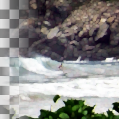

Value Propagate
Propagate certain colors to neighboring pixels.
Mode
Mode of value propagation
name: mode
type: enum
Lower threshold
Lower threshold
name: lower-threshold
type: double
default: 0.00
minimum: 0.00
maximum: 1.00
ui-minimum: 0.00
ui-maximum: 1.00
ui-gamma: 1.00
ui-step-small: 0.00
ui-step-big: 0.10
ui-digits: 3
Upper threshold
Upper threshold
name: upper-threshold
type: double
default: 1.00
minimum: 0.00
maximum: 1.00
ui-minimum: 0.00
ui-maximum: 1.00
ui-gamma: 1.00
ui-step-small: 0.00
ui-step-big: 0.10
ui-digits: 3
Propagating rate
Upper threshold
name: rate
type: double
default: 1.00
minimum: 0.00
maximum: 1.00
ui-minimum: 0.00
ui-maximum: 1.00
ui-gamma: 1.00
ui-step-small: 0.00
ui-step-big: 0.10
ui-digits: 3
Color
Color to use for the \"Only color\" and \"Color to peaks\" modes
name: color
type: color
default: rgb(0.0000, 0.0000, 1.0000)
visible:mode {color-peak, color}
role:color-primary
description:''
To top
Propagate to top
name: top
type: boolean
default: True
To left
Propagate to left
name: left
type: boolean
default: True
To right
Propagate to right
name: right
type: boolean
default: True
To bottom
Propagate to bottom
name: bottom
type: boolean
default: True
Propagating value channel
Propagating value channel
name: value
type: boolean
default: True
Propagating alpha channel
Propagating alpha channel
name: alpha
type: boolean
default: True
sensitive:! mode {color-peak}
pads: input output
parent-class: GeglOperationAreaFilter
categories: distort
source: operations/common-gpl3+/value-propagate.c
license: GPL3+
 This page is part of the online GEGL Documentation, GEGL is a data flow based image processing library/framework, made to fuel GIMPs high-bit depth non-destructive editing future.
This page is part of the online GEGL Documentation, GEGL is a data flow based image processing library/framework, made to fuel GIMPs high-bit depth non-destructive editing future.